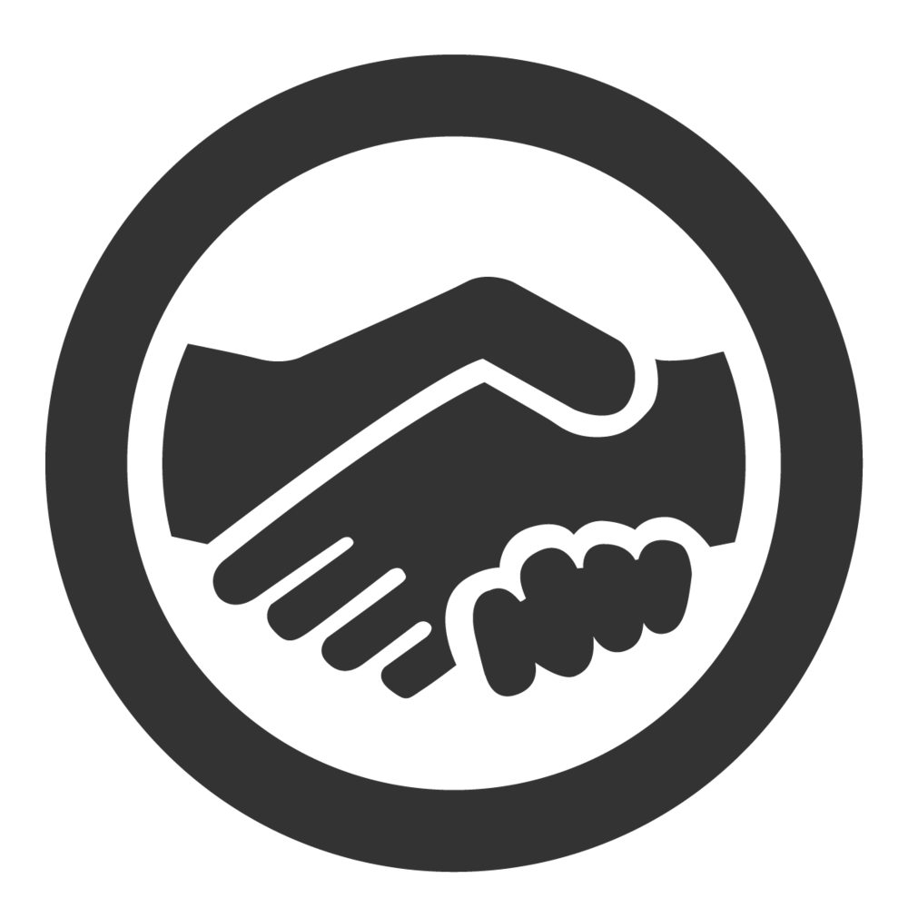

Ferenczi Ádám • S:)nrisa CV
Software Engineer - Javascript/Frontend DEV
My history (Before S:)nrisa)
2012 - Started programming as PHP dev
Building webshop engines, sitebuild, MVC, Databases
2014 - Frontend learning path
Advanced Javascript/jQuery knowledge, LESS/SASS, Mobile web, UI/UX, Large scale websites
My S:)nrisa History
2015.06 - 2015.08
Accomplishments
Had the chance to first learn about Angular Js through this project,
also
redesigned the Virtualizer for desktop & mobile web usage
for Dev ops.
Learned a bit about Maven and JAVA backend, and the Sonrisa dev basics(Gerrit, Jenkins,
Gitflow)
2015.08 - 2015.09
Cabi Mobile
Accomplishments
Participated in a larger scale Angular crossplatform app development, in an agile team. Learned
a lot about
Angular best practices, Gulp, Scrum methodology
, and working on a larger team too.
Also learned to use the Sonrisa systems/dev basics more efficiently including Redmine, Gitlab,
Gitflow and SDLC itself.
2015.09 - 2016.04
Jumio
Accomplishments
Participated in the "Ninjas" agile team, which developed the Jumio's HTML5 applications. Learned
a lot about Scrum, Continuous Integration & Delivery, Acceptance Test Drive Development,
Testing.
Gained experience in a lot of cutting edge technologies like
Typescript, Advanced Angular Js & Angular with Typescript, Javascript build tools(Grunt &
Gulp)
& their development, MEAN stack, Node.js,
Build
processes, Jenkins, and a lot of best practices in Software development. Also strengthened my
programming skills, and my javascript knowledge to a whole new level as a Full Stack
Javascript
developer.
Had the chance to work and travel in Vienna, in a multicultural environment, which was
one
of the most amazing experiences of my life. Unfortunately Jumio wanted the Frontend Development
take place only in Vienna, and not remotely, so they didn't continue my contract after ~6
months.
2016.04 - 2016.09
Accomplishments
Took part in an agile team creating Sonrisa's time logging app, Sontime. Had the opportunity to
try Coffeescript, and use my UI/UX knowledge. After the
Awakens freeze, in Rebirth, we
created our own ideas for Sontime, and a lot of my ideas were transferred into the final
product. Also gained experience in Javascript testing(Karma, Jasmine), and the project
helped me
to become an
expert on Angular. Mentoring and teaching the interns was a really valuable experience,
helped
me to develop my time management and focus skills.
2016.09 - 2017.01
Accomplishments
Joined the RBC team, to develop and build a webshop for Real Balance California in
Magento with
SAP
integration.
Had the chance to use my PHP skills again, and learned a lot of aspects of this engine fast.
I designed and built the Mobile Web version of the webshop.
We used a lot of fresh and new solutions like background video - parallax - dynamic backgrounds.
We used a lot of fresh and new solutions like background video - parallax - dynamic backgrounds.
2017.02 - 2017.03
Docler Holding Website
Accomplishments
Building a modern looking website with Angular + CMS system with security as the main priority.
Tech Qualities
Sitebuild
Basic
|
Intermediate
|
Master
Building websites from scratch, adapt designs, experienced creating both small and large
scaled
websites.
Understanding the browsers, using modern solutions platform-independently, using any
libraries(jQuery, Bootstrap etc.), or create my own solutions.
Passionate about good UI/UX. Using a sheer volume of best pracice.
CSS(LESS/SASS)
Basic
|
Intermediate
|
Master
Knowing a lot about CSS, using these preprocessors for a long time, understanding basic
and advanced concepts too, also best practices, writing good maintainable css for a
large scale.
Javascript
Basic
|
Intermediate
|
Master
Understanding basic and advanced concepts, design patterns, best practices. Know and use any
MV*
framework or library. Strong experience in Javascript build tools, Node.js, browser
behaviour,
crossplatform solutions.
Typescript
Basic
|
Intermediate
|
Master
Using it for 1,5 years, also with Angular, helped me to understand higher level languages
like
Java / C#, and using real OOP patterns, practices, planning to do a presentation & Dojo in
the
near future.
Angular & MV* Frameworks
Basic
|
Intermediate
|
Master
Encountered nearly every aspect of Angular 1.x, developed a lot of apps with it. Also
developed
in Ember.js, Knockout.js a bit.
Also have basic understanding of the newest technologies like Angular 2, React.js, Electron framework etc. Can learn anything new fast, and adapt well.
Also have basic understanding of the newest technologies like Angular 2, React.js, Electron framework etc. Can learn anything new fast, and adapt well.
Methodologies, Patterns
Basic
|
Intermediate
|
Master
Had to learn immensely lot to catch up, but i feel that i succeeded, read a lot about
Software
Development Processes, and i plan to do it further.
PHP
Basic
|
Intermediate
|
Master
PHP was the first language i learned, and practiced. Introduced me to MVC, OOP, coding
practices, and i gained a lot of devops experience through it too. Used a lot of frameworks,
extensions, have used versios PHP 4.7-7.x.
Also experienced in Magento & Wordpress development.
Also experienced in Magento & Wordpress development.
Grunt, Gulp, Yeoman
Basic
|
Intermediate
|
Master
Spent the most time working with these tools @ Sonrisa, from creating a basic build to code
my
own plugins for special needs.
Node.js, NPM
Basic
|
Intermediate
|
Master
From PHP switched to Node.js for basic backend tasks, or creating APIs for the apps/websites
i
developed. Used Node with Express framework too. Experienced with NPM and how it works.
Didn't have the opportunity to work on a larger Node.js project, would be a great
experience.
Databases
Basic
|
Intermediate
|
Master
Learned SQL through MySQL(i) first, then MSSQL and PDO. Then MEAN stack came with MongoDB &
NoSQL. Have a basic understanding of graph databases, planning to learn about them in the
future.
JAVA & C#
Basic
|
Intermediate
|
Master
Thanks to the Sonrisa presentations, dojos, onboarding, and the majority of projects, it
helped
me to understand the basics of these languages and the main core technologies like Spring
and
.NET, ant/maven,
and how we use them in real life. Also coded some in DOJOs.
C#/.NET will be my new mentoring goal for this year as a new learning curve.
C#/.NET will be my new mentoring goal for this year as a new learning curve.
Agile, Scrum, Kanban
Basic
|
Intermediate
|
Master
I had the chance to work on projects with great variety, from really strict scrum team to
kanban. I experienced and learned a lot from the PMs, or other Product owners, to work more
efficiently, to estimate better, to be more precise.
Contribution to S:)nrisa

Joyful personality

Flexibility, Fast learner
Determination
Fluent English

Social Connector

Less used technologies

Helpfulness
Wide range of interest
Young father
Market research - Salaries
I asked some companies, friends from similar companies like Sonrisa, about how much a person earns
with
my qualifications, knowledge and experiences without cafeteria. The result: (gross)
Senior Frontend Dev
500 000 Ft.
Full Stack Javascript Dev
480 000 Ft.
Lead UI Engineer
600 000 Ft.
Expert / Senior Software Engineer
450 000 Ft.
My Current Salary:
Junior Software Engineer
Junior Software Engineer
280 000 Ft. + 120 000 Ft every 3rd month
So my monthly net is 196 000 + 14 400 Ft(Travel) as a Junior Software Engineer.
I am a young but proud father of a 2 year old boy, a caring husband. We live from only my salary, We've
just
moved from my parents house
to stand our own feet 1 year ago. Unfortunately the sublet we live in is not so maintainable in a long
distance, we will need to move from here in the next autumn this year.
Also the GYED Extra we earned for our child is expired in January, so we have ~ 120 000 Ft less money per month.
Sadly this way, it is not possible to take a housing loan below 400 000 Ft gross income based on the newest law.
My question is, what can i do in my situation to reach a Salary between 450 000 - 600 000 Ft. Gross?
Also the GYED Extra we earned for our child is expired in January, so we have ~ 120 000 Ft less money per month.
Sadly this way, it is not possible to take a housing loan below 400 000 Ft gross income based on the newest law.
My question is, what can i do in my situation to reach a Salary between 450 000 - 600 000 Ft. Gross?